Published on: 2021-10-21
LAPS
Estimated time to read: 6 minutes
Summary
The "Local Administrator Password Solution" (LAPS) provides management of local account passwords of domain joined computers. Passwords are stored in Active Directory (AD) and protected by ACL, so only eligible users can read it or request its reset
Requirements
The following requirements are needed to run LAPS:
| Requirement Item | Value |
|---|---|
| Active Directory | Windows 2003 SP1 or above |
| Managed machines | Windows 2003 with current SP, or above Windows Vista with current SP, or above |
| Management Tools | .NET Framework 4.0 PowerShell 2.0 or above |
Installation & Setup
Installer Experience
When running the installer, there are two sets of components that can be installed: The AdmPwd GPO extension and the management tools. The GPO extension is the part that is required on systems to be managed by LAPS. The management tools are used to manage LAPS. To perform the initial setup of LAPS, the management tools will be required.
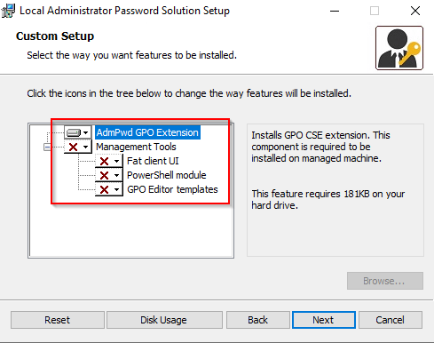
AD Schema Extension
To support LAPS, the AD Schema needs to be extended. This can be achieved by using the PowerShell module associated with LAPS called AdmPwd.PS. The user performing these commands must be a Schema Admin.
- Import the module
- Run the command to update the schema
Permission Delegation
Delegation of permissions needs to be performed on the Organisational Units containing the computer accounts that will be placed under LAPS. There are several key areas relating to the permissions:
- Removing
All Extended Permissionsfrom users and groups that won’t be allowed to read the value of the password - Adding
Writepermission to the two LAPS attributes on computer objects for theSELFbuilt-in account. This is so a machine can update its own password details - Adding
CONTROL_ACCESSon thems-Mcs-AdmPwdattribute of computer objects for the group/user that will be allowed to read the password - Add
Writepermission onms-Mcs-AdmPwdExpirationTimeattribute for the group/user that will be allowed to force a password reset
These can be achieved using the following PowerShell commands
Step
Script/Screenshot
- Import the module
- Remove
All Extended Permissionspermission. The command should affect sub-containers of the OU specified. - Add
Writepermission for the attributes toSELF. The command should affect sub-containers of the OU specified - Add
CONTROL_ACCESSon the Password attribute. The command should affect sub-containers of the OU specified - Add
Writepermission on the expiration attribute.
Installation of CSE
The LAPS installer needs to be run on the target machines. It can be installed silently.
Step
Script/Screenshot
- Install LAPS GPO CSE
- Confirm installation
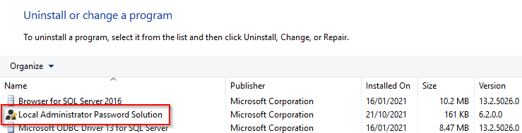
Enable Auditing of Password Resets
It’s possible to enable auditing of password resets. This can be achieved using the following PowerShell command. Auditing of Directory Service Access events also needs to be enabled on Domain Controllers for audit events to be logged successfully.
Group Policy
The specific settings related to LAPS are controlled by Group Policy.
- If using a Central Store, copy the
AdmPwd.admxandAdmPwl.admlfromC:\Windows\PolicyDefinitionsto the Central Store location (ie\\contoso.com\SYSVOL\contoso.com\Policies\PolicyDefintions) -
Create a new Group Policy Object and open it for editing. Expand the Administrative Templates branch. You should see a LAPS entry
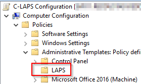
-
Open the
Enable local admin password managementitem and set it toEnabled. Click OK to save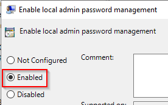
-
Open the
Password Settingsitem. Set it toEnabledand then set the password options as required. Click OK to save.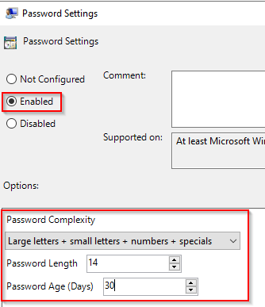
-
If you want to manage a custom local administrator account, open the
Name of administrator account to manage. Set to Enable and enter the name of the custom admin account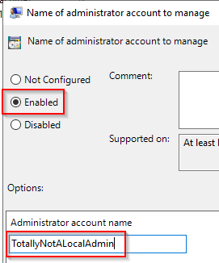
-
Once all the settings are done, close the GPO editor window
- Link the GPO to the Organisation Unit containing the systems to be managed by LAPS
Operations
How to get the passwords
Passwords can be viewed several ways: via PowerShell, in the AD Users and Computers MMC and using the LAPS UI tool.
-
PowerShell. Use the
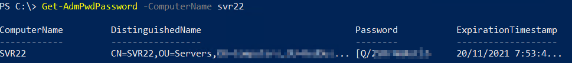Get-AdmPwdPasswordcmdlet and specify the ComputerName -
AD Users and Computers MMC. Open the Computer Object and select the Attribute Editor tab. Scroll down to the
ms-Mcs-AdmPwdattribute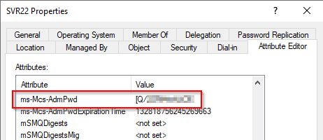
-
LAPS UI Tool. Run the Tool and enter the Computer Name in the field. Click Search
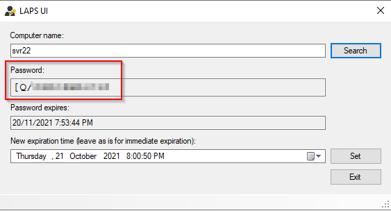
How to force a reset
In some circumstances, it may be required to reset the password. This can be performed using PowerShell or the LAPS UI tool.
- Powershell
-
LAPS UI Tool. Run the tool and search for the target system. Set the desired expiration time (which will force a reset at that time) and click the Set button
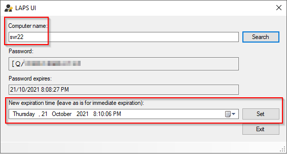
Experience of Non-Authorised Users
If a user isn’t part of the set of allowed principals used for configuration of LAPS, they won’t see the password. For example, if a non-authorised user tries to use the PowerShell cmdlet to read the password, no value is returned:
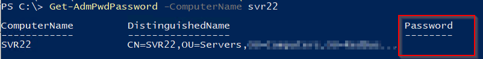
If attempting to view the password in AD Users and Computers, only a blank is shown. If the same non-authorised user tries to force a password reset, they will be denied.
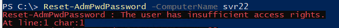
Using audit data
If auditing is enabled, event log entries will be generated in the Security log of Domain Controllers. An example is event ID 4662 which is generated when a password is successfully read. The event will contain details of the user who read the password and related object (ie. the target computer). An example of a successful read event is below:
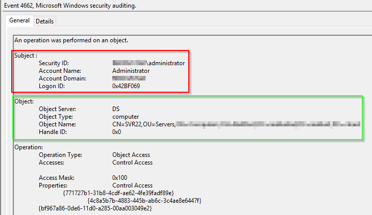
The contents of the red box is the user account that attempted the reading of the password (in this case, the domain admin account). The green box shows the details of the object that was read (SVR22).
Log Data
By default, LAPS will log errors only. The logging occurs in the local Event Log with the source of AdmPwd. The log level can be increased by editing the registry key HKLM\SOFTWARE\Microsoft\Windows NT\CurrentVersion\Winlogon\GPExtensions{D76B9641-3288-4f75-942D-087DE603E3EA}, value ExtensionDebugLevel (type DWORD). To log errors and warnings, set to 1. To enable verbose logging, set to 2. An example of events logged with verbose logging is below:
| Event ID | Description |
|---|---|
| 15 | Beginning Processing |
| 5 | Validation passed for new local admin password |
| 13 | Local Administrator’s password has been reported to AD |
| 12 | Local Administrator’s password has been changed |
| 14 | Finished successfully |
References
Microsoft LAPS usage assessment - Microsoft Defender for Identity
Download Local Administrator Password Solution (LAPS) from Official Microsoft Download Center
https://4sysops.com/archives/introduction-to-microsoft-laps-local-administrator-password-solution/
A Look at the Microsoft LAPS Group Policy Settings | Int64 Software Blog